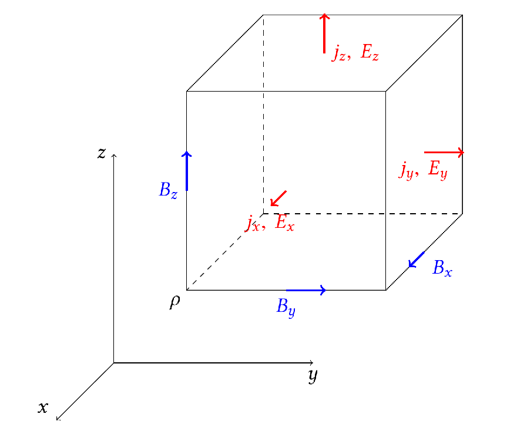

We have been focusing on the 1D advection equation:
$$ \frac{\partial u}{\partial t} + v \frac{\partial u}{\partial x} = 0 $$Its solution is simply a function propagating along $x$ at velocity $v$ that keeps its shape. We discussed two stable methods to solve this equation: the Lax-Friedrichs method and the Upwind method.
Both the Lax scheme and the Upwind scheme are 1st order in time. How do we achieve higher order time accuracy?
The staggered leapfrog method uses the following discretization:
$$ \frac{u_j^{n+1} - u_j^{n-1}}{2\Delta t} = -v \frac{u_{j+1}^n - u_{j-1}^n}{2\Delta x}. $$Both the time and space derivatives are centered difference with 2nd order accuracy.
Let's do a stability analysis for the staggered leapfrog method:
The solutions to the above equation are: $$ \xi = -i\frac{v\Delta t}{\Delta x}\sin k\Delta x \pm \sqrt{1 - \left(\frac{v\Delta t}{\Delta x}\sin k\Delta x\right)^2}. $$
$|\xi|^2 = 1$ as long as $v\Delta t < \Delta x$. There is no amplitude dissipation if Courant condition is satisfied.
The only problem with Leapfrog method is that it requires the value of $u^{n-1}$ in addition to $u^n$: $$ \frac{u_j^{n+1} - u_j^{n-1}}{2\Delta t} = -v \frac{u_{j+1}^n - u_{j-1}^n}{2\Delta x}. $$
Typically you need to use one of the 1st order methods to jump start the solution, and then use the leapfrog method to get higher order accuracy. For example, you can use the Lax-Friedrichs method to get $u^{1}$ from $u^0$, and then use the leapfrog method to get $u^{2}$ from $u^1$ and $u^0$.
Let's try to apply the staggered leapfrog method to the 1D advection equation. Here we again chose $v\Delta t = \Delta x$.
Simulating the time-dependent Maxwell equations is a very common task for computational physics. $$ \begin{align} \frac{\partial \mathbf{E}}{\partial t} &= c\nabla \times \mathbf{B} - 4\pi\mathbf{j}, \\ \frac{\partial \mathbf{B}}{\partial t} &= -c\nabla \times \mathbf{E}. \end{align} $$
A common method for this application is a variation of the staggered leapfrog method developed by Yee (1966).
Yee lattice is a staggered grid where the electric field components are defined at half-integer time steps $n+1/2$, and the magnetic field components are defined at integer time steps $n$.
The electric field components are defined at the center of the faces of the grid, while the magnetic field components are defined at the center of the edges of the grid.
The Yee lattice is the cheapest method to achieve 2nd order accuracy in both space and time, and the nature of the method preserves the amplitudes of all waves, making it ideal to study the propagation of electromagnetic waves.
Let's try to apply the staggered leapfrog method to the 1D advection equation using a box initial condition.
A 2nd order method that avoids spurious oscillations is the Lax-Wendroff method. It performs the time update in two steps:
First, we use the Lax scheme to form intermediate values $u_{j + 1/2}^{n+1/2}$:
$$ u_{j+1/2}^{n+1/2} = \frac{1}{2}(u_j^n + u_{j+1}^n) - v\frac{u_{j+1}^n - u_j^n}{\Delta x}\frac{\Delta t}{2}. $$Then we use the leapfrog scheme to compute $u_j^{n+1}$:
$$ u_j^{n+1} = u_j^n - \frac{v\Delta t}{\Delta x}(u_{j+1/2}^{n+1/2} - u_{j-1/2}^{n+1/2}). $$If we carry out the stability analysis for Lax-Wendroff, we can get:
$$ \xi = 1 - i\alpha \sin k\Delta x - \alpha^2(1 - \cos k\Delta x). $$where $\alpha = v\Delta t/\Delta x$.
The amplitude square $|\xi|^2$ is:
$$ |\xi|^2 = 1 - \alpha^2(1 - \alpha^2)(1 - \cos k\Delta x)^2. $$The stability condition again is $\alpha \leq 1$.
For $\alpha = 1$ there is no amplitude dissipation. For other $\alpha$, the dissipation is minimal when $k\Delta x \ll 1$. Only grid scale waves ($k\Delta x\sim 1$) get dissipated.
Let's see how it performs on our sample advection problem. Again, $v\Delta t = \Delta x$.
How about the box initial condition?
In general, finite difference methods are not very good at handling very large gradients or discontinuities. There are better methods out there, e.g. the finite volume method with explicit shock-capturing schemes.
In Project 2, we will implement a finite volume method in 2D, and use it to simulate some fluid dynamics.
How do we extend the finite difference method to higher dimensions?
Consider the 2D advection equation: $$ \frac{\partial u}{\partial t} + \mathbf{v}\cdot\nabla u = 0 $$
This operator $\mathbf{v}\cdot\nabla$ means $v_x\partial_x + v_y\partial_y$.
Now we have a 2D grid:
$$ x = x_0 + j\Delta x, \quad y = y_0 + k\Delta y $$The Lax scheme now looks like:
$$ \begin{align} u_{j,k}^{n+1} &= \frac{1}{4}(u_{j+1,k}^n + u_{j-1,k}^n + u_{j,k+1}^n + u_{j,k-1}^n) \\ &- v_x \frac{u_{j+1,k}^n - u_{j-1,k}^n}{2\Delta x} \Delta t \\ &- v_y \frac{u_{j,k+1}^n - u_{j,k-1}^n}{2\Delta y} \Delta t \end{align} $$Stability analysis in 2D assumes a mode in the following form:
$$ u^n_{j,k} = \exp\left(ik_x j\Delta x + ik_y k\Delta y\right) $$We then plug this into the numerical scheme to find $\xi$ such that $u^{n+1}_{j,k} = \xi u^n_{j, k}$.
For the 2D Lax scheme, we have: $$ \xi = \frac{1}{2}\left(\cos (k_x\Delta x) + \cos (k_y\Delta y)\right) - i\frac{v_x\Delta t}{\Delta x}\sin(k_x\Delta x) - i\frac{v_y\Delta t}{\Delta y}\sin(k_y\Delta y) $$
The condition for the 2D Lax scheme to be stable, or $|\xi|^2 \leq 1$ is:
$$ \Delta t \leq \frac{1}{\sqrt{2}\sqrt{\left(v_x/\Delta x\right)^2 + \left(v_y/\Delta y\right)^2}} $$If $\Delta x = \Delta y = \Delta$, then: $$ \Delta t \leq \frac{\Delta}{\sqrt{2}\sqrt{v_x^2 + v_y^2}} $$ This is the CFL condition in 2D. Comparing with 1D where $\Delta t \leq \Delta x/v$, there is an extra factor of $\sqrt{2}$, making the condition more stringent.
Demo of Lax scheme in 2D: